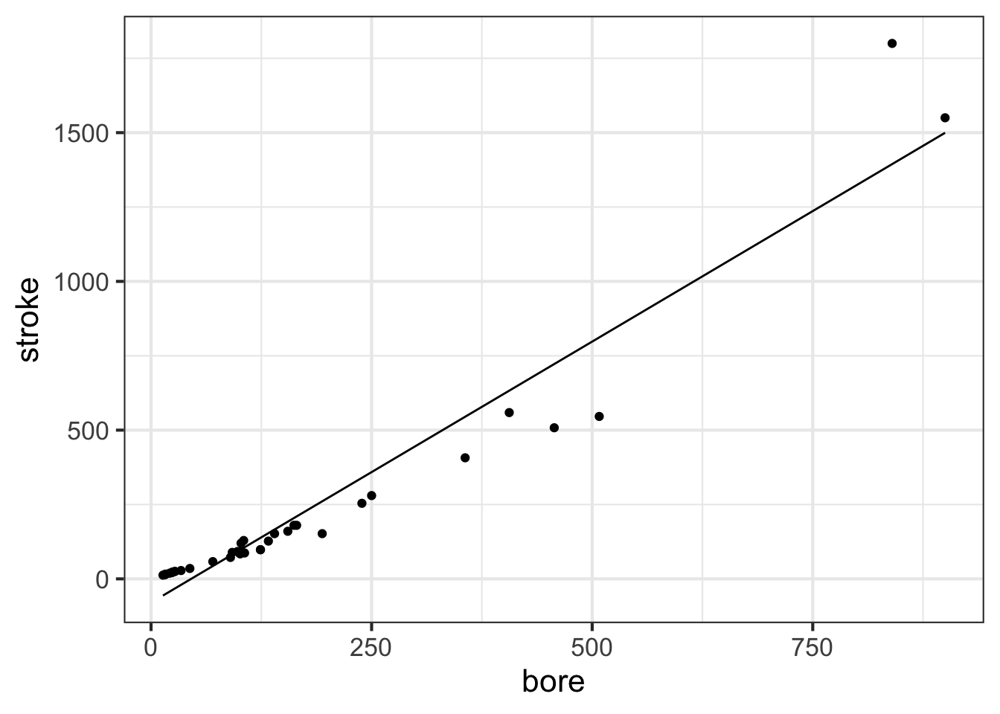
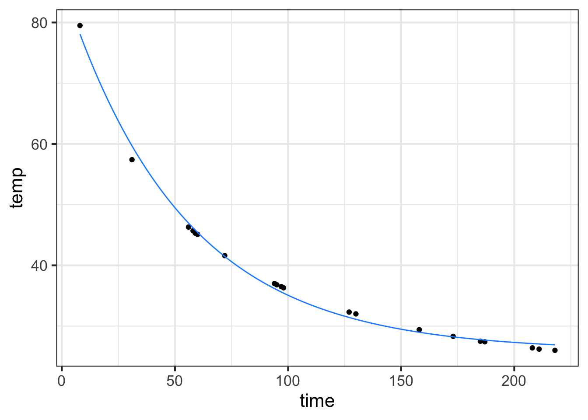
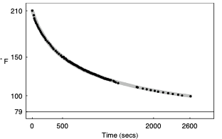
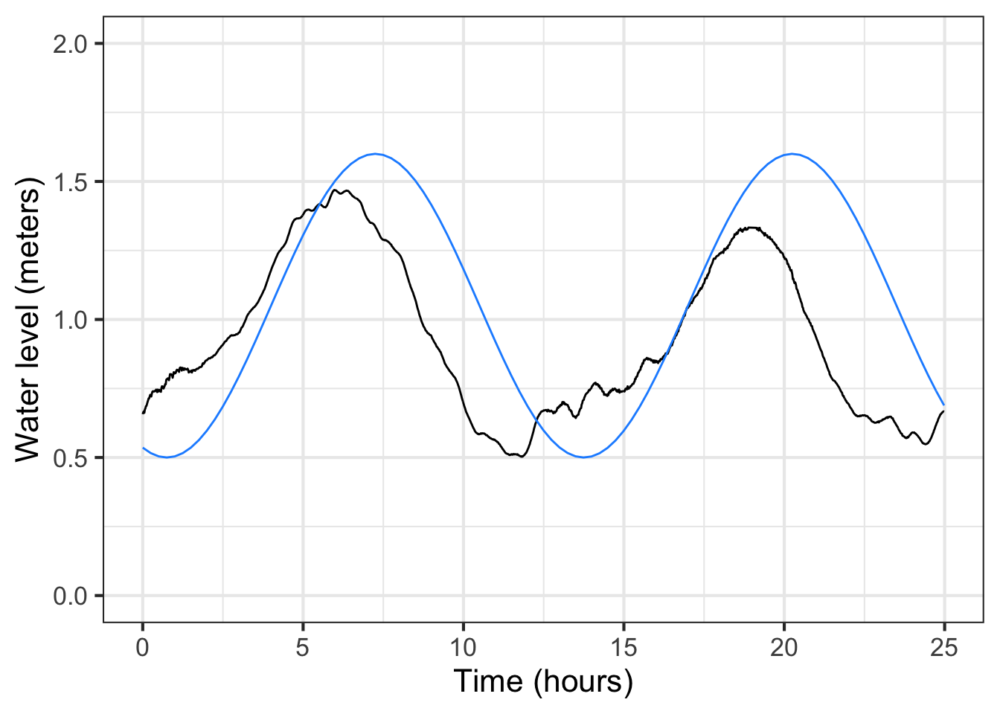
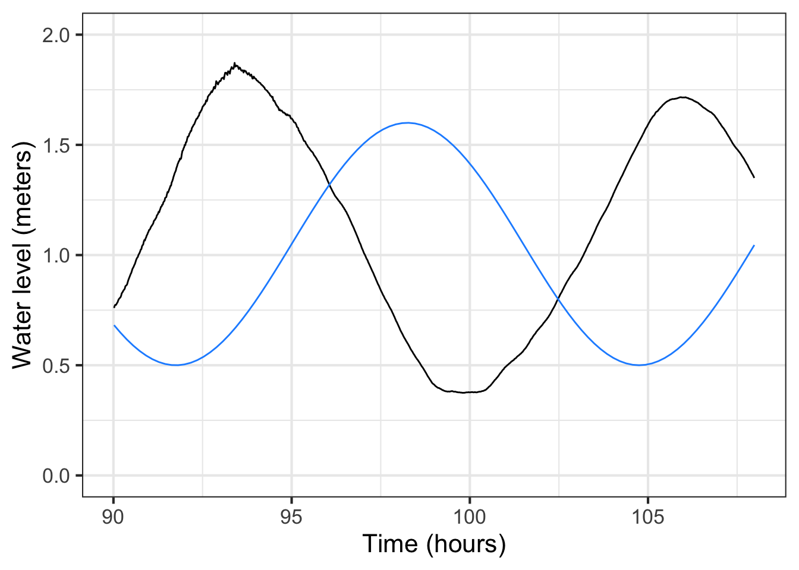
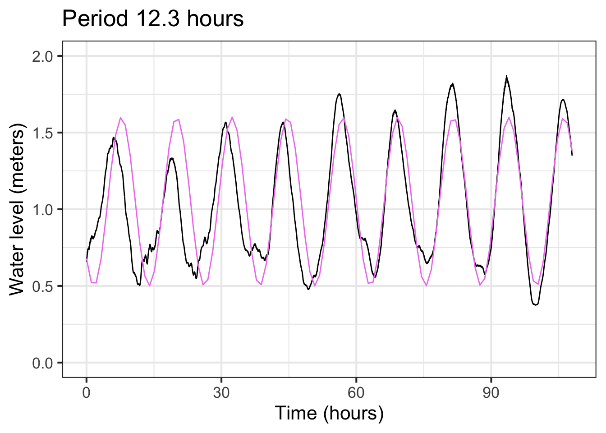
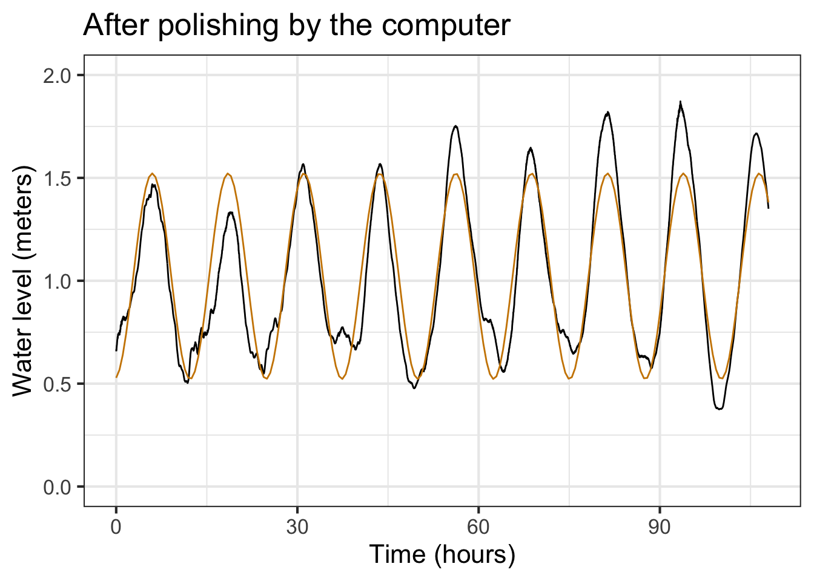
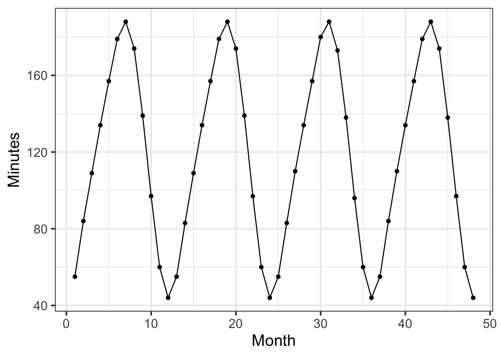

Seen very abstractly, a mathematical model is a set of functions that represent the relationships between inputs and outputs.
At the most simple level, building a model can be a short process:
Develop an understanding of the relationship you want to model. Often, part of this “understanding” is the pattern seen in data.
Choose a function type—e.g. exponential, sinusoidal, sigmoid—that you think would be a good match to the relationship.
Find parameters that scales your function to be able to accept real-world inputs and generate real-world outputs.
It is important to distinguish between two basic types of model:
Empirical models which are rooted in observation and data.
Mechanistic models such as those created by applying fundamental laws of physics, chemistry, and such.
We will put off mechanistic models for a while, for two reasons. First, the “fundamental laws of physics, chemistry, and such” are often expressed with the concepts and methods of calculus. We are heading there, but at this point you don’t yet know the core concepts and methods of calculus. Second, most students don’t make a careful study of the “fundamental laws of physics, chemistry, and such” until after they have studied calculus. So examples of mechanistic models will be a bit hollow at this point.
16.2 AN EXAMPLE FROM THE 01-parameters chapter
Math in the World: Exponential COVID
You can see in Figure 8.2 that the exponential function plotted in \(\color{blue}{\text{blue}}\) does not align perfectly with the day-by-day data. For instance, during the interval from March 8 to 21, the function output is consistently higher than the data suggest it should be. As part of the modeling cycle it is important to notice such discrepancies and try to understand them. In this case, it is likely that during the early days of the pandemic the number of reported deaths understated the actual number of COVID-related deaths. This happens because, in the early days of the pandemic, many deaths from COVID were mis-attributed to other causes.
Effective modelers treat models with skepticism. They look for ways in which models fail to capture salient features of the real world. They have an eye out for deviations between what their models show and what they believe they know about the system being modeled. They consider ways in which the models might not serve the purpose for which they were developed.
When modelers spot a failure or deviation or lack of proper utility, they might discard the model but more often they make a series of small adjustments, tuning up the model until is successfully serves the purposes for which it is intended.
Thus, modeling is a cyclic process of creating a model, assessing the model, and revising the model. The process comes to a sort of preliminary end when the model serves its purposes. But even then, models are often revised to check whether the results are sensitive to some factor that was not included or to check whether some component that was deemed essential really is so.
16.3 Example: Cooling water
Looking back on the exponential fitted to the cooling water data in ?sec-fit-exponential, it looks like our original estimate of the half-life is a bit too small; the data does not seem to decay at the rate implied by \(k = -0.0277\). Perhaps we should try a somewhat slower decay, say \(k = -0.2\) and see if that improves things.
In the cooling water example, we are using only a subset of the data collected by Prof. Wagon. The next commands re-create that subset so that you can work with it. They also plot the data and an exponential model.
# reconstruct the sampleset.seed(101)Stans_data <- CoolingWater %>%sample_n(20)# Plot the sample and overlay a modelgf_point(temp ~ time, data=Stans_data) %>%gf_lims(y =c(20, NA)) %>%slice_plot(25+83.3*exp(-.0277*time) ~ time, color="dodgerblue")

See if \(k=-0.02\) provides a better fit to the model. (You can add another slice_plot() to be able to compare the original and \(k=-0.02\) models.)
Later in this course, we will study optimization. There are optimization techniques for directing the computer to refine the parameters to best match the data. Just to illustrate, here is what we get:
refined_params <-fitModel(temp ~ A + B*exp(k*time), data = Stans_data,start =list(A =25, B =83.3, k =-0.0277))coef(refined_params)## A B k ## 25.92628463 60.69255269 -0.01892572new_f <-makeFun(refined_params)gf_point(temp ~ time, data = Stans_data) %>%slice_plot(new_f(time) ~ time, color="dodgerblue")

Figure 16.1: Polishing the fit using the rough model as a starting point.
The refined parameters give a much better fit to the data than our original rough estimates by eye.
We had two rounds of the modeling cycle. First, choice of an exponential model and a rough estimate of the parameters A, B, and \(k\). Second, refinement of those parameters using the computer.
Looking at the results of the second round, the experienced modeler can see some disturbing discrepancies. First, the estimated baseline appears to be too high. Related, the initial decay of the model function does not seem to be fast enough and the decay of the model function for large \(t\) appears to be too slow. Prof. Stan Wagon noticed this. He used additional data to fill in the gaps for small \(t\) and refined his model further by changing the basis functions in the linear combination. He hypothesized that there are at least two different cooling processes. First, the newly poured water raises the temperature of the mug itself. Since the water and mug are in direct contact, this is a fast process. Then, the complete water/mug unit comes slowly into equilibrium with the room temperature.
The newly refined model was a even better match to the data. But nothing’s perfect and Prof. Wagon saw an opportunity for additional refinement based on the idea that there is a third physical mechanism of cooling: evaporation from the surface of the hot water. Prof. Wagon’s additional circuits of the modeling cycle were appropriate to his purpose, which was to develop a detailed understanding of the process of cooling. For other purposes, such as demonstrating the appropriateness of an exponential process or interpolating between the data points, earlier cycles might have sufficed.
Here’s a graph of the model Prof. Wagon constructed to match the data.

Figure 16.2: A model that combines three exponentials provides an excellent fit.
This is an excellent match to the data. But … matching the data isn’t always the only goal of modeling. Prof. Wagon wanted to make sure the model was physically plausible. And looking at the refined parameters, which include two exponential processes with parameters \(k_1\) and \(k_2\), he saw something wrong:
But what can we make of \(k_1\), whose [positive value] violates the laws of thermodynamics by suggesting that the water gets hotter by virtue of its presence in the cool air? The most likely problem is that our simple model (the proportionality assumption) is not adequate near the boiling point. There are many complicated factors that affect heat transportation, such as air movement, boundary layer dissipation, and diffusion, and our use of a single linear relationship appears to be inadequate. In the next section [of our paper] we suggest some further experiments, but we also hope that our experiments might inspire readers to come up with a better mathematical model.
The modeling cycle can go round and round!
16.4 Example: The tides
In ?sec-fit-periodic we looked at a sinusoid model of tide levels in Rhode Island. We left unresolved how to refine the estimate of the period \(P\) and find the time offset \(t_0\) in the sinusoidal model \[\text{tide}(t) \equiv A \sin\left(\frac{2\pi}{P} (t-t_0)\right) + B\]
The new parameter, \(t_0\), should be set to be the time of a positive-going crossing of the baseline. Looking at the tide data (black) plotted in ?fig-Fun-4-a-3-4 we can pick out such a crossing at about time = 17. Happily, changing the phase does not itself necessitate re-estimating the other parameters: baseline, amplitude, period. This model, incorporating the phase, has been graphed in \(\color{blue}{\text{blue}}\).

Figure 16.3: Shifting the phase of the sinusoid gives the flexibility needed to align the peaks and troughs of the model with the data. Performing this alignment for one peak makes it clear that the period is wrong.

Figure 16.4: Shifting the phase of the sinusoid gives the flexibility needed to align the peaks and troughs of the model with the data. Performing this alignment for one peak makes it clear that the period is wrong.
For some modeling purposes, such as prediction of future tides, the phase information is essential. For others, say, description of the amplitude of the tides, not. But getting the phase roughly right can help point out other problems. For instance, in the left panel of ?fig-Fun-4-a-3-4 the blue model is roughly aligned with the data. Not at all so in the right panel. What leads to the discrepancy is a bad estimate for the period. 13 hours is roughly right, but over a five-day period the error accumulates until, in the right panel, the model has a trough where the data peak, and vice versa.
Although the blue sinusoid is not perfect, having it for comparison suggests that the previously estimated period of 13 hours is too long. We can shorten the period gradually in our model until we find something that better matches the data. For example: Figure 16.5 shows that a period of 12.3 hours is a good match to the data.
With this refinement the model is \[{\color{green}{\text{tide}(t)} \equiv 1.05 + 0.55 \sin(2\pi (t - 17)/12.3)}\]

Figure 16.5: With the phase about right, a better estimate can be made of the period: 12.3 hours.
We might call it quits with the model in Figure 16.5. But once we have a pretty good model fit, it is easy to polish the parameter estimates, letting the computer do the tedious work of trying little tweaks to see if it can improve the fit.
The R/mosaic fitModel() can do this tweaking for us. As the following commands show, fitModel() takes a tilde expression as input. To the left of the tilde goes the name of the function output in the data frame being used. The right side is a formula for the model, with names used for each parameter and using the names of inputs from the data frame. The second argument is the data frame. The third argument is used to convey an estimate for each parameter; that estimate should be pretty good if fitModel() is to be able to refine it.
The output from fitModel() is a function, which we are naming tide_mod().
tide_mod <-fitModel(level ~ A + B*sin(2*pi*(hour-t0)/P),data = RI_tide,start=list(A=1.05, B=0.55, t0=17, P=12.3))coef(tide_mod)## A B t0 P ## 1.0220540 0.4998367 15.3899905 12.5593556
The command coef(tide_mod) displays the parameters found by fitModel() which will be an improvement—perhaps a big improvement, perhaps not—on our original estimates.
These new parameters differ only slightly from the ones shown in Figure 16.5, but the match to the data with the new coefficients is discernably better, even by eye.

Figure 16.6: Polishing the parameters of the sinusoid
This last model seems capable of making reasonable predictions, so if we collected up-to-date data we might be able to fit a new model to predict the tide level pretty accurately a few days ahead of time. Also, the excellent alignment of the model peaks with the data tell us that the cyclic tide has a period that is constant, at least so far as we can tell.
With the period estimate \(P=12.56\) hours, we can go looking for other phenomena that might account for the tides. The period of the day-night cycle is, of course 24 hours. So the tides in Providence come in and out twice a day. But not exactly. Something else must be going on.
Isaac Newton was the first to propose that the tides were caused by the gravitational attraction of the Moon. A complete cycle of the Moon—moon rise to moon rise—takes about 50 minutes longer than a full day: the Earth revolves once every 24 hours, but in that time the Moon has moved a bit further on in its orbit of the Earth. So the Moon’s period, seen from a fixed place on Earth is about 24.8 hours. Half of this, 12.4 hours, is awfully close to our estimate of the tidal period: 12.56 hours. The difference in periods, 8 minutes a day, might be hard to observe over only 4 days. Maybe with more data we’d get a better match between the tides and the moon.
This is the modeling cycle at work: Propose a model form (a sinusoid), adjust parameters to match what we know (the Providence tide record), compare the model to the data, observe discrepancies, propose a refined model. You can stop the model when it is giving you what you need. The period 12.56 hour model seems good enough to make a prediction of the tide level a few days ahead, and is certainly better than the “two tides a day” model. But our model is not yet able to implicate precisely the Moon’s orbit in tidal oscillations.
Discrepancies between a model and data play two roles: they help us decide if the model is fit for the purpose we have in mind and they can point the way to improved models. That the tidal data deviates from the steady amplitude of our model can be a clue for where to look next. It is not always obvious where this will lead.
Historically, careful analysis of tides led to a highly detailed, highly accurate model: a linear combination of sinusoids with periods near a half-day 12.42 , 12.00, 12.66, and 11.97 hours as well components with periods that are about a day long 23.93, 25.82, 24.07, 26.87, and 24.00 hours. A tide-prediction model is constructed by finding the coefficients of the linear combination; these differ from locale to locale. There is no global model of tides, but rather a framework of linear combinations of sinusoids of different periods. What customizes the framework to the tides in a particular locale is the coefficients used in the linear combination.
Polishing the phase (optional)
Linear combination to represent phase shift. \(\sin(x + \phi) = \cos(\phi)\sin(x) + \sin(\phi) \cos(x)\)
\(C \sin(x +\phi) = A \sin(x) + B \cos(x)\) where \(C^2 = A^2 + B^2\) and \(\phi=\arctan(A/B)\)
16.5 Modeling project
The data frame MMAC::SunsetLA records the number of minutes after 4 pm until the sun sets in Los Angeles, CA over a 4-year interval from January 2010 (month 1) through December 2013 (month 48).
Open a sandbox and make a plot of sunset time versus month.
gf_point(Minutes ~ Month, data = MMAC::SunsetLA) %>%gf_line()

We are using both gf_point() and gf_line(). With data that oscillates up and down, connecting the data points with lines makes it easier to see the pattern.
**Part A** What is the range of the number of minutes until sunset over the whole 4-year period?
40 to 190 minutes 120 minutes 40 to 180 minutes 0 to 48 months
**Part B** The data fall nicely on a sine-shaped curve. What is the period of that sine?
6 months 11 months 12 months 12 minutes
The function \[\text{sunset}(\text{Month}) \equiv A \sin(2 \pi\, \text{Month} / 12) + C\] is a linear combination of two functions:
The constant function one(Month)
The sine function sin(2*pi*Month/12)
The two functions are scaled by \(C\) and \(A\), respectively.
Make rough but reasonable numeric estimates for \(C\) and \(A\) from the data. Then, in the sandbox, define the sunset() function using the numerical estimates in the linear combination. Plot your function as a layer on top of the data. (Pipe the gf_point() layer to slice_plot().)
sunset <-makeFun(A + C*sin(2*pi*(Month - offset)/12), A = __your estimate__, C = __your estimate__,offset=0)gf_point(Minutes ~ Month, data = MMAC::SunsetLA) %>%gf_line() %>%slice_plot(sunset(Month) ~ Month)
The domain for slice_plot() is inherited to that implied by the MMAC::SunsetLA data. Notice that the input name in slice_plot() corresponds to that established in gf_point().
**Part C** Your `sunset()` function should be a pretty good match to the data except for one thing. What is that thing?
The sunset() function has a completely different range than the data.
The period of the sunset() function does not match the data.
There is a horizontal time shift between sunset() and the data.
We will fix the problem with sunset() by defining a time offset to use as a reference. For a sine function, a suitable time offset is the value along the horizontal axis when the phenomenon being modeled crosses \(C\) with a positive slope. There are 4 such points along the horizontal axis readily identifiable in the data. (They may not be at an integer value of Month.)
**Part D** Which of these is a suitable value for the time offset?
0 months 19 months 21.5 months 15.5 months
In the original scaffolding, the value of offset was zero. Change that to match your answer to the previous question.
Plot out the modified sunset() function and confirm that it is a much better match to the data than the original (that is, the one without the time offset). You can “tune” your function by tweaking the numerical values of the \(A\), \(C\), and \(offset\) parameters until you get a solid match.
Alternatively, you can use fitModel() to do the tuning for you. Plug in your estimates (a.k.a. “guesses”) for the parameters in place of the ___ in the following. Then run the code. You will see your estimate of the function compared to the result of having the computer refine your estimate. Chances are, the computer does a better job of stringing the function through the data.
Perhaps you were expecting the tuned sine function to match the data exactly. It does not. One reason for this is that the Earth’s orbit around the Sun is not exactly circular. The sine function is only a model of the phenomenon, good for some purposes and not for others. For a more complete explanation, see this article on Wikipedia.